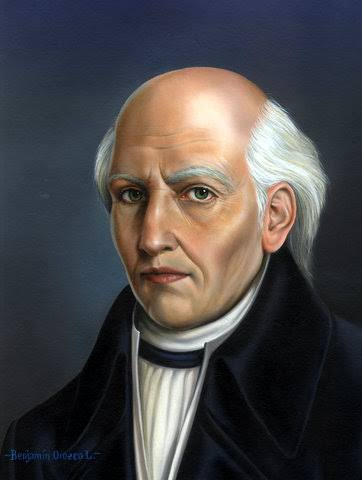
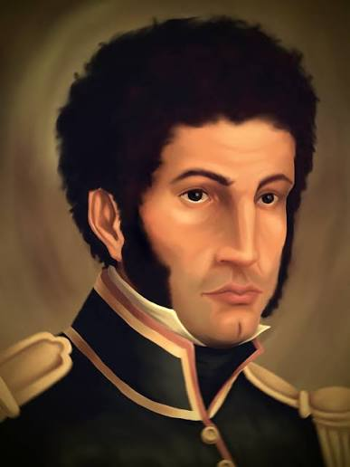
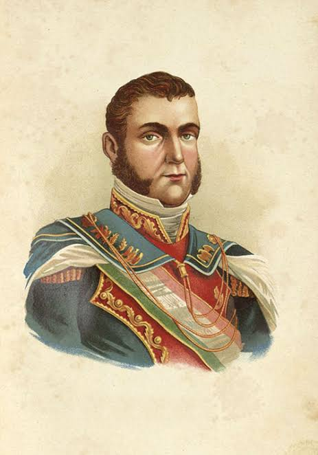

MÉXICO

Miguel Hidalgo y Costilla:
Considerado el Padre de la Patria; inició el movimiento independentista.

José María Morelos y Pavón:
Estratega militar y libertador que definió los ideales políticos de la nación en los Sentimientos de la Nación.

Josefa Ortiz de Domínguez
La Corregidora; figura clave de la Conspiración de Querétaro que avisó a los insurgentes para iniciar la lucha.

Vicente Guerrero
Líder insurgente de la resistencia que pactó la paz para consumar la independencia con la frase: "La patria es primero".

Agustín de Iturbide
Comandante del Ejército Realista que negoció con los insurgentes el Plan de Iguala, formó el Ejército Trigarante y consumó la Independencia en 1821, convirtiéndose después en el primer Emperador de México.